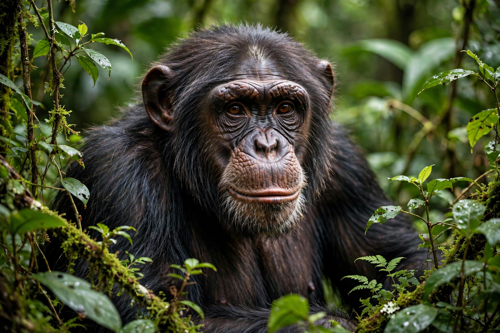

The chimpanzee (Pan troglodytes), also simply known as the chimp, is a species of great ape native to the forests and savannahs of tropical Africa. It has four confirmed subspecies and a fifth proposed one. When its close relative the bonobo was more commonly known as the pygmy chimpanzee, this species was often called the common chimpanzee or the robust chimpanzee. The chimpanzee and the bonobo are the only species in the genus Pan. Evidence from fossils and DNA sequencing shows that Pan is a sister taxon to the human lineage and is thus humans' closest living relative.
| Chimpanzee | |
|---|---|
 | |
| Scientific name | Pan troglodytes |
| Conservation status | Endangered (IUCN) |
| Height | 1–1.7 m (standing) |
| Weight | 32–60 kg |
| Lifespan | ~40 years (wild); 50+ (captivity) |
Chimpanzees are covered in coarse black hair, with a bare face, fingers, toes, palms and soles. They are larger and more robust than bonobos, with long arms that allow knuckle-walking on the ground and swinging in trees, where they build sleeping nests nightly.
Chimpanzees live in fission–fusion communities of typically 20–150 members led by an alpha male. They are famously tool users: Jane Goodall's research at Gombe Stream, Tanzania, from 1960 documented termite fishing with sticks, leaf sponges, and nut-cracking with stone hammers — behaviours that vary culturally between groups. Chimpanzees hunt cooperatively (notably red colobus monkeys), engage in grooming-based alliances, reconcile after conflicts, and have displayed lethal intergroup aggression. They communicate with a rich repertoire of facial expressions, gestures, and vocalisations including the pant-hoot.
Chimpanzees share about 98.8% of their DNA with humans, diverging from a common ancestor roughly 4–6 million years ago. They have been used historically in research and entertainment — Ham was the first hominid in space (1961) — but invasive research has been ended or heavily restricted in many countries, and the species is listed as Endangered due to habitat loss, poaching, and disease.
From Wikipedia, the free encyclopedia (recreated from memory).